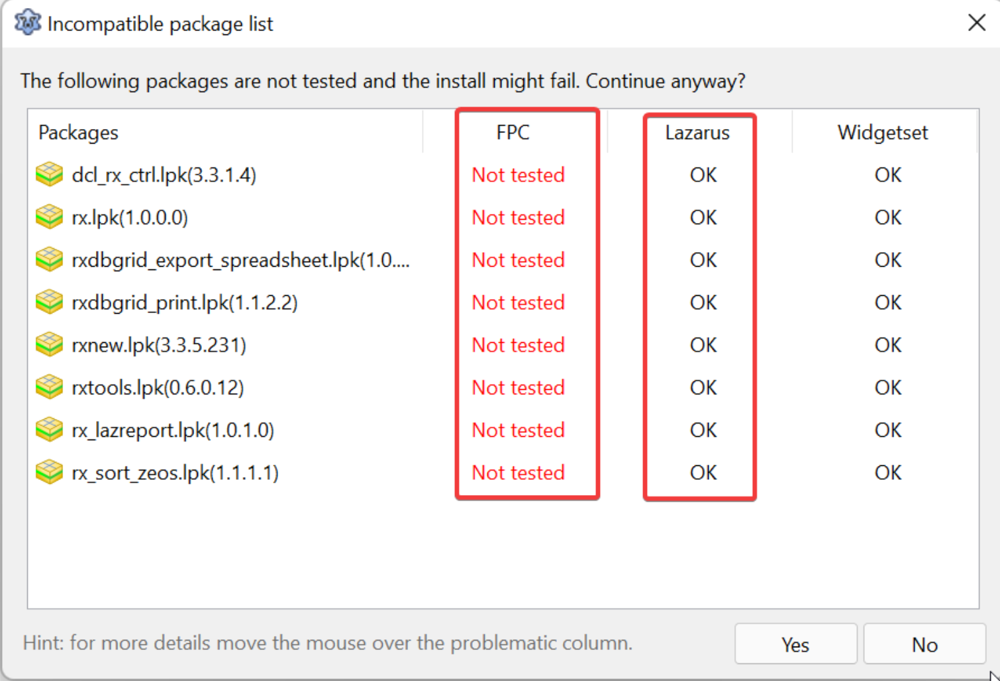

Estes pacotes são similares ao método de instalação de pacotes que viu na seção anterior, exceto que os pacotes são baixados e instalados diretamente do repositório do desenvolvedor. A vantagem é clara, obter a mais nova versão, por outro lado deve-se ter muito cuidado, pois a equipe do time do Lazarus não se responsabiliza por eles.
Às vezes o mesmo pacote existe tanto como “addon” como também via OPM, quando isso acontece você precisa decidir entre qual instalar.
Para instalar um pacote por esse método vá em Package->Online Package Manager e então escolher um pacote desejável, mas fique atento quando observar esta tela de confirmação:

As colunas grifadas indicam se o componente foi testado no compilador FPC vigente (instalado no seu computador) e também o Lazarus vigente e qual foi o resultado dos testes. Quando obtém uma resposta negativa(FAIL) nem tente instalar porque falhará. Às vezes aparecerá “Not tested” como no exemplo acima, isso significa que a quantidade de pessoas que instalaram o recurso foi insuficiente para determinar sucesso ou falha.
Provavelmente há uma opção de telemetria no Lazarus -ainda não descobri onde fica- que envia relatórios dos componentes instalados a um banco de dados central, é com base nessa telemetria que estes resultados são apresentados.
No OPM você pode instalar vários pacotes por vez, porém não pode usar filtro, ao usar filtro para encontrar mais rapidamente outro pacote, você acaba desmarcando os anteriores.
Embora seja permitido, NÃO RECOMENDO INSTALAÇÃO DE VÁRIOS PACOTES DE UMA ÚNICA VEZ porque as vezes a combinação entre eles podem gerar uma interdependencia de pacotes não resolvidos.